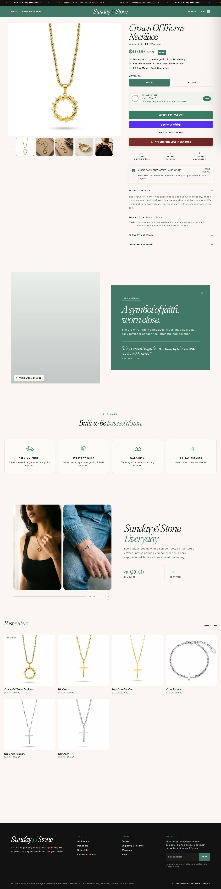

Fonte: coleção de best sellers.
Mediana do catálogo: $38.99 · faixa $8.99 a $62.0
| # | Produto | Preço |
|---|---|---|
| 1 | Crown Of Thorns Necklace | $49.99 |
| 2 | His Cross | $39.99 |
| 3 | His Cross | $39.99 |
| 4 | Her Cross Pendant | $38.99 |
| 5 | Cross Bracelet | $49.99 |
| 6 | Her Cross Pendant | $38.99 |
| Criativos únicos (amostra de 32 mais recentes) | 1 |
| Fator de duplicação | 32.0x (mesmo criativo repetido) |
| Anúncios por dia | 0.7/dia · ~4.9/semana |
| Criativos únicos por semana | 0.1 |
| Janela da amostra | 48.9 dias |
| Mix de formato e sofisticação | Estático premium, título único. Sofisticação média-alta (nível 2-3): mais capricho visual, coerente com o posicionamento premium. |
Sinal de "vencedor" = longevidade + nº de cópias + sobrevivência (a Meta não expõe impressão pra e-commerce). O % exato de cada formato exige inspeção visual de cada criativo, um a um — fica declarado como lacuna; a leitura acima é qualitativa, da amostra.
1÷10,6% por construção (tautologia), não um achado.| Headline |
|---|
| "Premium Christian Jewelry" |
O que faz o campeão vender, decodificado dos criativos e da PDP: é isto que se copia, não o número de anúncios.
| Big idea / ângulo | Joia cristã premium (sem desconto, ao contrário de todo o nicho). |
| Mecanismo único | Posicionamento premium puro: vende qualidade e status de marca em vez de oferta agressiva. Caminho oposto ao BOGO. |
| Formato de hook | "Premium Christian Jewelry" — título único, sem promoção, apostando no posicionamento. |
| Estrutura do presell | Presell mais construído: GemPages (page builder) + Rebuy (upsell inteligente) elevam o AOV sem desconto. |
| Objeção principal | "Por que pagar mais sem desconto?" Respondida com a percepção de qualidade premium e o stack de conversão, não com preço. |
O que copiar de cada página, com o link pra abrir e estudar.
| Home — o que modelar | Home premium sem desconto, foco em qualidade e curadoria; page builder (GemPages) dá cara de marca. 🏬 abrir home ↗ |
| PDP — o que modelar | PDP com upsell inteligente (Rebuy) elevando o AOV sem promoção. Modele a conversão premium. 🛍️ abrir PDP do campeão ↗ |
Contagem tirada do JSON-LD da própria loja (widget loox), não de terceiro. Amostra dos produtos, é piso e não o total.
| Produto amostrado | Reviews | Nota |
|---|---|---|
| crown-of-thorns-pendant-1 | 1 | 4.0 |
Transparência sobre os limites desta ficha. Cada linha mostra o que faltou, por quê, e o que foi tentado.
| Dado | Motivo | Método tentado |
|---|---|---|
| Pixel ID da Meta | não encontrado no HTML da home | Regex no HTML. O pixel é carregado via GTM ou via Customer Events do Shopify, que não expõe o ID no fonte. |
| Eixo | Pontos | Por quê |
|---|---|---|
| Sourcing simples | 2/2 | catálogo de 16 produtos |
| Ticket fecha sem escada | 1/2 | premium sem desconto pede o core bancar sozinho |
| Criativo simples de produzir | 2/2 | estático, título único |
| Mecanismo com urgência | 1/2 | premium/autoexpressão, baixa urgência |
| Investimento de entrada baixo | 1/2 | premium exige mais bolso pra achar vencedor |
| Sem dependência de autoridade | 1/2 | "premium" depende de percepção de marca |
Nível é etiqueta de "pra quem serve", não nota de corte: 10-12 iniciante, 6-9 médio, 0-5 avançado. Toda oportunidade de dropshipping vale, muda só o perfil de operador.
Posicionamento premium sem desconto no criativo, caminho oposto ao resto do nicho. Roda um titulo unico ("Premium Christian Jewelry") em toda a amostra, num ritmo lento (0,7 anuncio/dia ao longo de 49 dias) e sobrevivencia de 94%. Stack mais sofisticado do grupo: GemPages, Rebuy (upsell inteligente) e Triple Whale. Catalogo de 16 produtos.